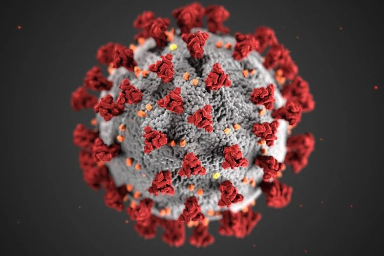

Juru Bicara Gugus Tugas Simalungun dan Keluarganya Positif Covid-19
SIMALUNGUN, KOMPAS.com - Juru Bicara Gugus Tugas Percepatan Penanganan Covid-19 Pemerintah Kabupaten Simalungun, Sumatera Utara, Akmal Siregar dinyatakan positif Covid-19. Pria yang aktif mengabarkan kondisi perkembangan Covid-19 ini dirawat bersama istri dan tiga orang anaknya di Rumah Sakit Darurat Covid-19 di Batu 20, Kecamatan Panombeian Panei, Simalungun. "Alhamdulillah, saya dan keluarga dalam keadaan sehat. Ini bukan aib yang harus ditutupi, namun harus kita lawan," ucap Akmal Siregar lewat pesan singkatnya kepada Kompas.com, Sabtu (11/0/7/2020).
Akmal mengatakan, saat ini ia dan keluarganya dirawat di dalam satu ruangan di RS Darurat Covid-19 di Batu 20. Awalnya, Akmal melakukan rapid test bersama keluarganya pada Jumat (10/7/2020). Hasilnya menunjukkan reaktif. Kemudian di hari yang sama, Akmal dan keluarga melakukan tes swab. Kemudian pada hari itu juga hasilnya langsung diketahui. "Hasil swab diketahui positif dari Laboratorium RS Perdagangan hari itu juga," ujar Akmal.
Akmal mengatakan, dia dan keluarga ikhlas menjalani perawatan untuk proses penyembuhan mereka. Selama ini, Akmal hanya tahu dan mengenalkan Covid-19 kepada masyarakat. Tugasnya juga mengabarkan tentang kondisi Covid-19 di Simalungun kepada para wartawan. "Dan saat ini saya dan keluarga dikenalkan langsung dengan Covid-19. Mohon doanya, agar kami bisa sembuh dan kuat menjalaninya," ujar Akmal. Akmal diduga tertular virus karena aktivitasnya yang belakangan ini fokus menangani masyarakat di Dusun Huta II, Nagori (Desa) Tanjung Hataran, Kecamatan Bandar Huluan, Kabupaten Simalungun. Hingga akhir Juni 2020, sedikitnya 38 warga dari dusun tersebut yang positif Covid-19. Tim Gugus Tugas sudah melakukan karantina wilayah. Akmal diketahui aktif memantau kondisi perkembangan di dusun tersebut. Akmal juga ikut menyiapkan makanan yang diantar langsung ke masing-masing rumah warga, yang dilarang untuk keluar kampung.